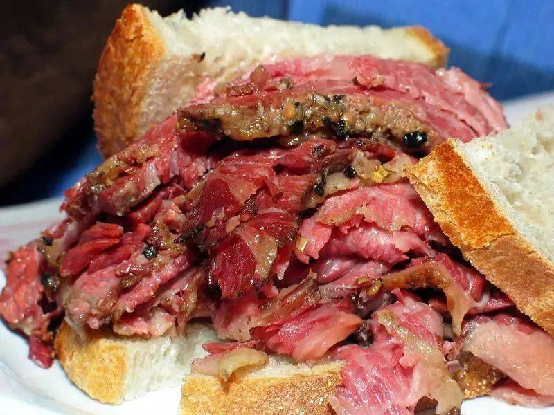
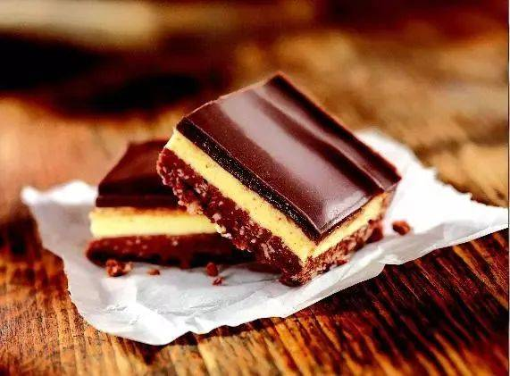
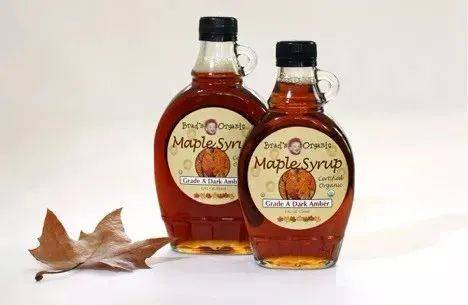
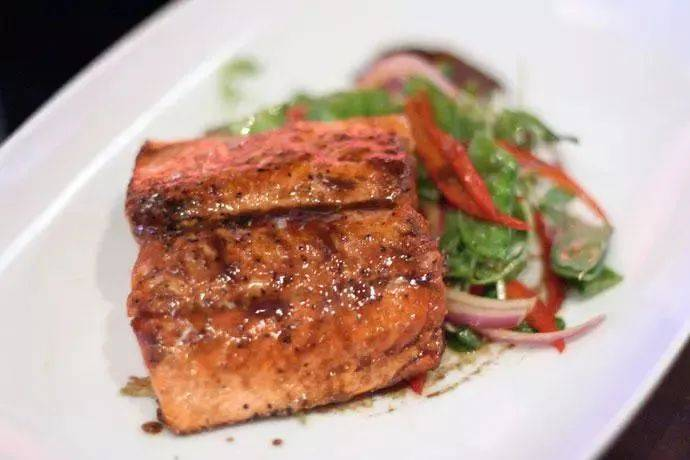
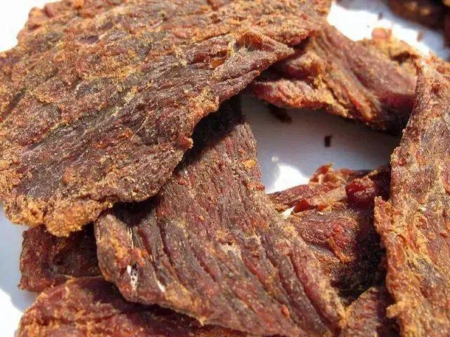
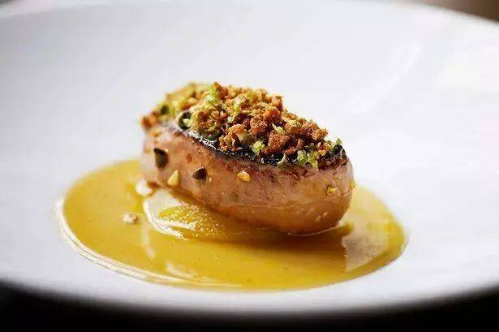

|
|
 |  |  |
|---|---|---|---|
|  |  |  |
INTRODUCTION: As a country of immigrants, Canada is one of the most diverse countries in terms of food, and immigrants from all over the world have brought a variety of regional cuisines to Canada.Restaurants and snacks from all over the world can be said to be the only thing you can't find.
Here is an introduction to some of these cuisines:
|
|
Poutine, or potato fries with cheese and gravy, is a classic Quebec snack that originated in the 1850s. It is actually a special way of eating French fries in the Canadian tradition. French fries are sprinkled with cheese curds and topped with a rich gravy. Sometimes ham, sausage or salmon is added and is usually served as a snack or side dish. Even McDonald's now sells Poutine, which shows its popularity. |
|
Montreal Smoked Meat is known far and wide! Montreal Smoked Meat is a kosher style cooked beef that is smoked over a beef brisket. It is hand sliced to a uniform thickness of 3 mm and is usually eaten in sandwiches. Montreal smoked meat originated from the Jews who came from Eastern Europe and settled in Quebec in the late 19th century. One of the most famous local bacon sandwich spots in Montreal is Schwartz's, and there is also a store in Toronto, Caplansky's Deli, that has a similar Montreal style bacon. |
|
Nanaimo Bars, or "Grandma's Temple Bars" as the Chinese call them, are a must-try dessert for dessert lovers. Made with whole wheat crumbs, shredded coconut, walnuts, vanilla pudding and chocolate, but the North American sweet tooth is sweet. |
|
Maple syrup is a common seasoning in Canada, processed from the sap extracted from the trunks of red, black, and sugar maple species, and has a light, sweet taste and bright color that can be poured over pot pies, waffles, grilled meats, and other foods. The default seasoning at the table in many Canadian restaurants is a small bottle of maple syrup in addition to salt, pepper and ketchup. Many recipes are replaced with maple syrup when the honey in them arrives in Canada. And "beaver tails", timbits and other Canadian specialties will not be missing the sweet and mellow flavor of maple syrup. |
|
Icewine is a famous Canadian specialty made from grapes that have been frozen before harvesting, with a high sugar content and a cold, sweet and bitter taste. Ontario and British Columbia are the two largest producers of ice wine in Canada, with the Niagara Peninsula and the Okanagan Valley being the most productive areas for ice wine. Icewine comes in smaller bottles than wine, usually in slender 375 ml bottles, and is very delicate to look at. As a type of dessert wine, ice wine is not suitable for large sips, but only for small tastes. Chill the wine and pour a small glass at 5-7 degrees Celsius and serve it with dessert or cheese, foie gras, fruit or nuts. When choosing a snack, make sure it is less sweet than the ice wine. |
|
BC Salmon, also known as BC Pacific Salmon, is a very complex species. It has a very different color and taste from Pacific salmon, and comes from BC on the west coast of Canada. Pacific salmon was designated as the "provincial fish" of BC last year, and is the "provincial emblem" of BC fish. BC salmon tastes great raw and delicious cooked. |
|
Pemmican jerky is a bit like the familiar beef jerky and pork jerky, but Pemmican jerky is a food made from a mixture of bison or moose jerky. It is very nutritious, high in protein and fat, and was adopted as a special food for Arctic explorers. The word Pemmican comes from the Aboriginal word Cree, which means "artificial grease". Today it is a popular snack for hikers as well as Canadians. |
|
Foie Gras is a French delicacy that was brought to Quebec by French immigrants in the early days of Canada and refined to become a delicacy in Canadian fine dining. It is made from the liver of a duck or goose and has a very rich flavor. However, because the production process of Foie Gras is cruel to live geese and ducks, there is a lot of controversy among Canadians who are animal lovers about this dish. |